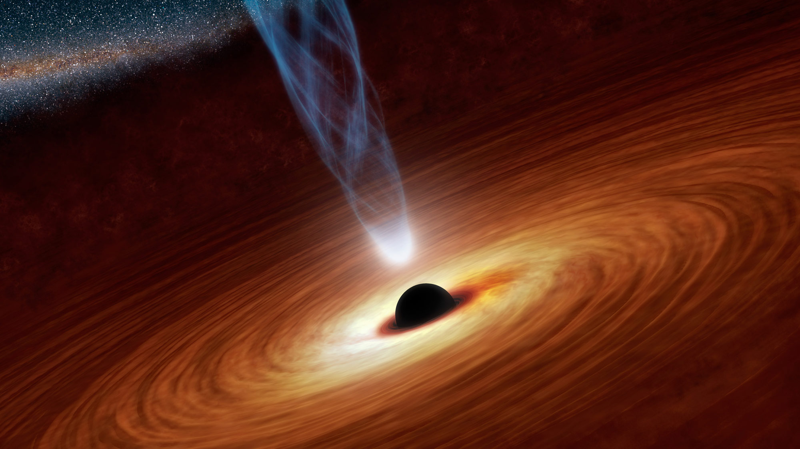

Graduated with a Bachelor's of Science in Physics and Astronomy from Florida International University. I researched optical variability in blazars with Dr. James Webb, observational astronomy instrumentation, and ion propulsion thrusters. I've worked with various telescopes in the SARA Observatory, including the 0.6-meter telescope at the Stocker AstroScience Center on the FIU campus. Currently applying to graduate schools to pursue a Ph.D. in Astrophysics to research exoplanets.
Research Interests
Variability in Optical and Polarimetry Observations of Blazars

Understanding the mechanisms and structures responsible for the variable nature of blazars was a topic I pursued heavily through my undergraduate degree. I researched blazar 2200+420 (BL Lac) extensively in its optical and polarimetric variability, through our own observatory at the Stocker AstroScience Center and the SARA Observatories.
Image Credit: Georgia State University
Ion Propulsion
Ion thrusters are lucrative for long duration space flights as they have shown to be incredibly efficient compared to contemporary chemical rockets. For a period of time, I worked on designing an acceleration grid ion thruster with a modular architecture.
Image Credit: NASA, University of Michigan
Exoplanet Detection and Characterization
Over the last decade the number of confirmed exoplanets has skyrocketed. This has allowed astronomers unprecendented access to studying planetary systems light-years away through direct-imaging or transit light-curve observations. The research I have keen interest in is detecting exoplanets through those observational methods, understanding how the various species of exoplanets are distributed in our galaxy, and to learn their atmospheric properties through spectroscopy.
Image Credit: NRC-HIA/C. MAROIS/W. M. KECK OBSERVATORY
Astrophotography
A small selection of my favorite Messier objects I have taken with the 0.6-meter telescope at the Stocker AstroScience Center and with my iPhone using an 8-in Celestron. Follow my space Instagram where I've started posting regularly all of the images I've taken over time at @steve_n_space. For a more robust catalog of all the Messier objects I have observed in collaboration with other astronomers at the Stocker AstroScience Center, click here.


{kind=link}
{kind=link}
{kind=link}
{kind=link}
{kind=link}
{kind=link}
{kind=link}
{kind=link}
{kind=link}